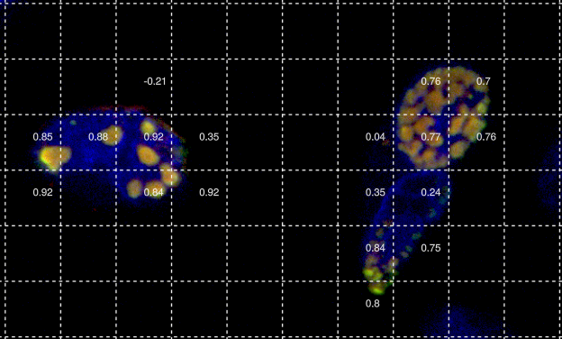
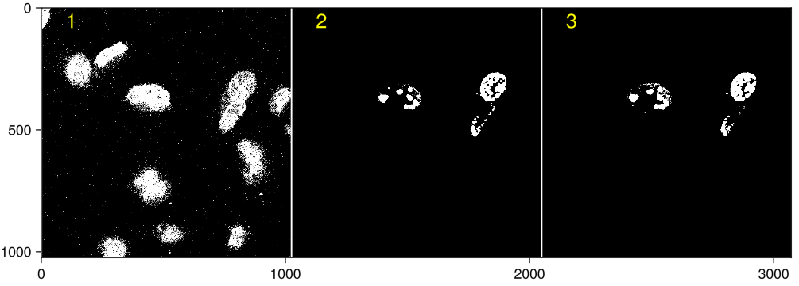
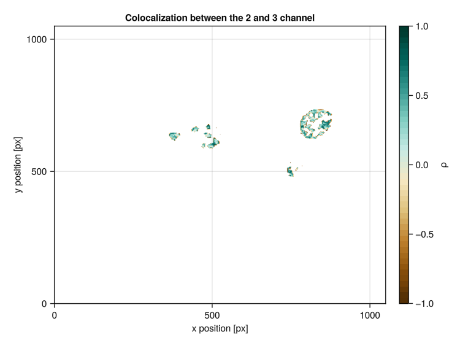

Functions to plot results
Plotting functions
Plot correlation of each image patch
The plotting method plots the merged MultiChannelimage an displays the computed correlation metric for each image patch. The correlation mechanism are chosen based on the cor_methodargument:
:pearson: Pearson correlation coefficient (PCC):spearman: Spearman's rank correlation coefficient:kendall: Kendall rank correlation coefficient
If scale_channels is set to true, the pixel intensities are scaled to a range between 0 and 1 using min-max scaling.

ProteinCoLoc.plot — Methodplot(
img::LoadImages.MultiChannelImage,
num_patches::T,
cor_channel::Vector{T} = [2, 3];
scale_channels::Bool = true,
file::String = "test.png";
channel_for_plot::Vector{T} = [1, 2, 3],
save_to_file::Bool = true,
cor_method::Symbol = :pearson
) where {T <: Int}
Plot the image with the patches and the correlation of each patch.
# Arguments
- `img::LoadImages.MultiChannelImage`: The image to plot.
- `num_patches::Int64`: The number of patches to use.
- `cor_channel::Vector{Int64}`: The channels to use for the calculation of correlation.
- `scale_channels::Bool`: Whether to scale the channels intensities to the range [0, 1].
- `file::String`: The file to save the plot to. Must end with .png or .svg.
- `channel_for_plot::Vector{Int64}`: The channels to use for plotting. Only 1-3 channels are supported.
The first channel is plotted in blue, the second in green and the third in red.
- `save_to_file::Bool`: Whether to save the plot to the file.
- `cor_method::Symbol`: The method to use for the calculation of correlation. Default is :pearson. Other options are :spearman and :kendall.
# Example
```julia
path = ["test_images/c1.tif", "test_images/c2.tif", "test_images/c3.tif"]
img = LoadImages.MultiChannelImage("positive_sample", path, ["blue", "green", "red"])
mask = LoadImages._calculate_mask(img)
LoadImages._apply_mask!(img, mask)
cor_channel = [2, 3]
scale_channels = true
num_patches = 16
plot(img, num_patches, cor_channel, scale_channels, "test.png")
```Plot mask
As explained in our paper, we use Otsu thresholding to compute a mask. This mask can be visualised using the function plot_mask(img::MultiChannelImage, file::String). In these images all masked pixels are depicted black and non-masked pixels that are included in the analysis are white.

ProteinCoLoc.plot_mask — Functionplot_mask(img::LoadImages.MultiChannelImage,file::String = "test.png")
Plot the mask of the image with the channels separated by lines.
Save the plot to the file and also return it.
# Arguments
- `img::LoadImages.MultiChannelImage`: The image to plot.
- `file::String`: The file to save the plot to. Must end with .png or .svg.Plot local correlation plot
The local correlation plot allows for the visualisation of local colocalization patterns at a finer spatial scale and enables visualising variations in colocalization intensity within small image patches (ideally between 10 and 100 px). Robust estimates for individual patches are ensured by performing a correlation between intensities only if 15 or more pixels in a patch have intensities above Otsu’s threshold for both channels. If the chosen number of patches is too high, the number of patches is dynamically adjusted until at least 15 pixels in a patch have non-masked intensities.

ProteinCoLoc.local_correlation_plot — Functionlocal_correlation_plot(
img::MultiChannelImage,
num_patches::Int,
cor_channel::Vector{Int} = [2, 3];
channel_for_plot::Vector{Int} = [1, 2, 3],
save::Bool = true,
file::String = "local_correlation.png",
cor_method::Symbol = :pearson
)This function generates a local correlation plot for a multi-channel image.
Arguments
img: A MultiChannelImage representing the image.num_patches: An integer representing the number of patches to be analyzed.cor_channel: A Vector of two integers representing the channels for which the correlation is to be calculated. Default is [2, 3].channel_for_plot: A Vector of integers representing the channels to be plotted. Default is [1, 2, 3].save: A boolean indicating whether to save the plot to a file. Default is true.file: A string representing the filename for the output file. Default is "local_correlation.png".cor_method: A Symbol representing the method to be used for the calculation of correlation. Default is :pearson. Other options are :spearman and :kendall.
Returns
fig: A Figure object representing the generated plot.
Errors
- Throws a warning if no patches with a successful correlation calculation exist.
- Throws a warning if no local correlation plot could be generated.
Notes
This function calculates the local correlation for each patch, checks that patches with a successful correlation calculation exist, tries a different patch size if necessary, plots the local correlation, and saves the plot to a file if specified.
Helper functions
ProteinCoLoc.minmax_norm! — Methodminmax_norm!(img::Matrix{Float64})This function normalizes a 2D image matrix to the range [0, 1].
Arguments
img: A 2D matrix of Float64 representing the image to be normalized.
Returns
img: The input image matrix, modified in-place, where each pixel value has been normalized to the range [0, 1].
Notes
This function normalizes the image by subtracting the minimum pixel value from each pixel, and then dividing each pixel by the range of pixel values (maximum - minimum). The normalization is performed in-place, modifying the input image matrix directly.
ProteinCoLoc.cm_to_px — Functioncm_to_px(cm::Float64, dpi::Int)::IntThis function converts a measurement from centimeters to pixels, given a specific dots per inch (dpi) value.
Arguments
cm: A Float64 representing the measurement in centimeters.dpi: An integer representing the dots per inch (dpi) value.
Returns
px: An integer representing the measurement in pixels.
Notes
This function first converts the measurement from centimeters to inches, then converts the measurement from inches to pixels using the dpi value. The result is rounded to the nearest integer.
ProteinCoLoc.calculate_font_size — Functioncalculate_font_size(
resolution::Tuple{Int, Int},
scale_factor::Float64
)This function calculates the font size based on the resolution of the plot and a scale factor.
Arguments
resolution: A tuple of two integers representing the width and height of the plot in pixels.scale_factor: A Float64 representing the scale factor to be applied to the resolution to calculate the font size.
Returns
font_size: An integer representing the calculated font size.
Notes
This function calculates the font size by taking the minimum of the width and height of the plot, multiplying it by the scale factor, and rounding the result to the nearest integer.